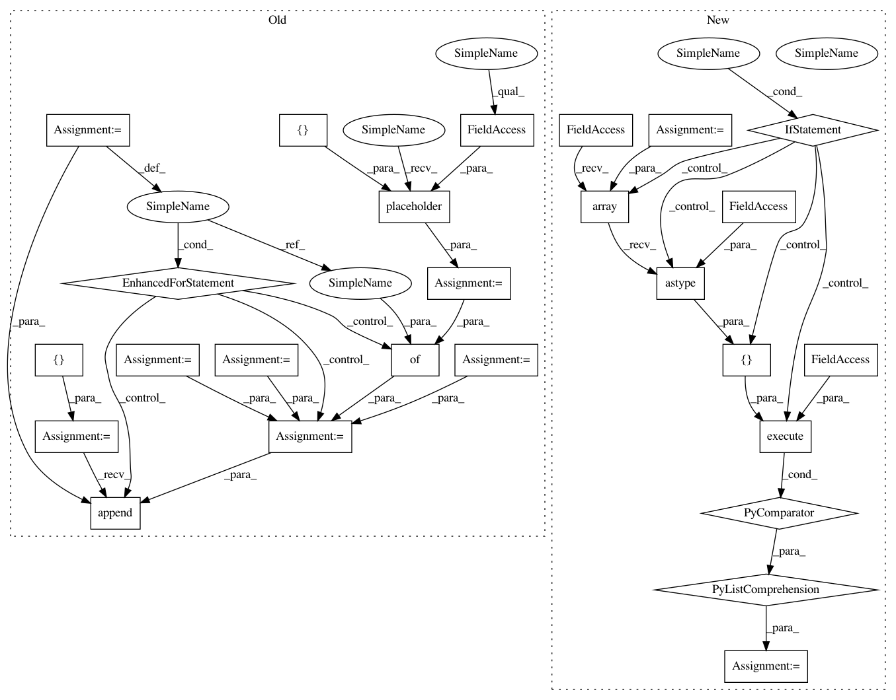

5e854f25098ca40a4ac80197607bf883feaeb375,research/object_detection/utils/learning_schedules_test.py,LearningSchedulesTest,testExponentialDecayWithBurnin,#LearningSchedulesTest#,24
Before Change
class LearningSchedulesTest(tf.test.TestCase):
def testExponentialDecayWithBurnin(self):
global_step = tf.placeholder(tf.int32, [])
learning_rate_base = 1.0
learning_rate_decay_steps = 3
learning_rate_decay_factor = .1
burnin_learning_rate = .5
burnin_steps = 2
exp_rates = [.5, .5, 1, .1, .1, .1, .01, .01]
learning_rate = learning_schedules.exponential_decay_with_burnin(
global_step, learning_rate_base, learning_rate_decay_steps,
learning_rate_decay_factor, burnin_learning_rate, burnin_steps)
with self.test_session() as sess:
output_rates = []
for input_global_step in range(8):
output_rate = sess.run(learning_rate,
feed_dict={global_step: input_global_step})
output_rates.append(output_rate)
self.assertAllClose(output_rates, exp_rates)
def testCosineDecayWithWarmup(self):
global_step = tf.placeholder(tf.int32, [])
After Change
learning_rate_decay_factor, burnin_learning_rate, burnin_steps)
return (learning_rate,)
output_rates = [
self.execute(graph_fn, [np.array(i).astype(np.int64)]) for i in range(8)
]
exp_rates = [.5, .5, 1, .1, .1, .1, .01, .01]
self.assertAllClose(output_rates, exp_rates, rtol=1e-4)
In pattern: SUPERPATTERN
Frequency: 3
Non-data size: 26
Instances
Project Name: tensorflow/models
Commit Name: 5e854f25098ca40a4ac80197607bf883feaeb375
Time: 2018-02-13
Author: lzc@google.com
File Name: research/object_detection/utils/learning_schedules_test.py
Class Name: LearningSchedulesTest
Method Name: testExponentialDecayWithBurnin
Project Name: tensorflow/models
Commit Name: 5e854f25098ca40a4ac80197607bf883feaeb375
Time: 2018-02-13
Author: lzc@google.com
File Name: research/object_detection/utils/learning_schedules_test.py
Class Name: LearningSchedulesTest
Method Name: testCosineDecayWithWarmup
Project Name: tensorflow/models
Commit Name: 5e854f25098ca40a4ac80197607bf883feaeb375
Time: 2018-02-13
Author: lzc@google.com
File Name: research/object_detection/utils/learning_schedules_test.py
Class Name: LearningSchedulesTest
Method Name: testExponentialDecayWithBurnin
Project Name: tensorflow/models
Commit Name: 5e854f25098ca40a4ac80197607bf883feaeb375
Time: 2018-02-13
Author: lzc@google.com
File Name: research/object_detection/utils/learning_schedules_test.py
Class Name: LearningSchedulesTest
Method Name: testManualStepping